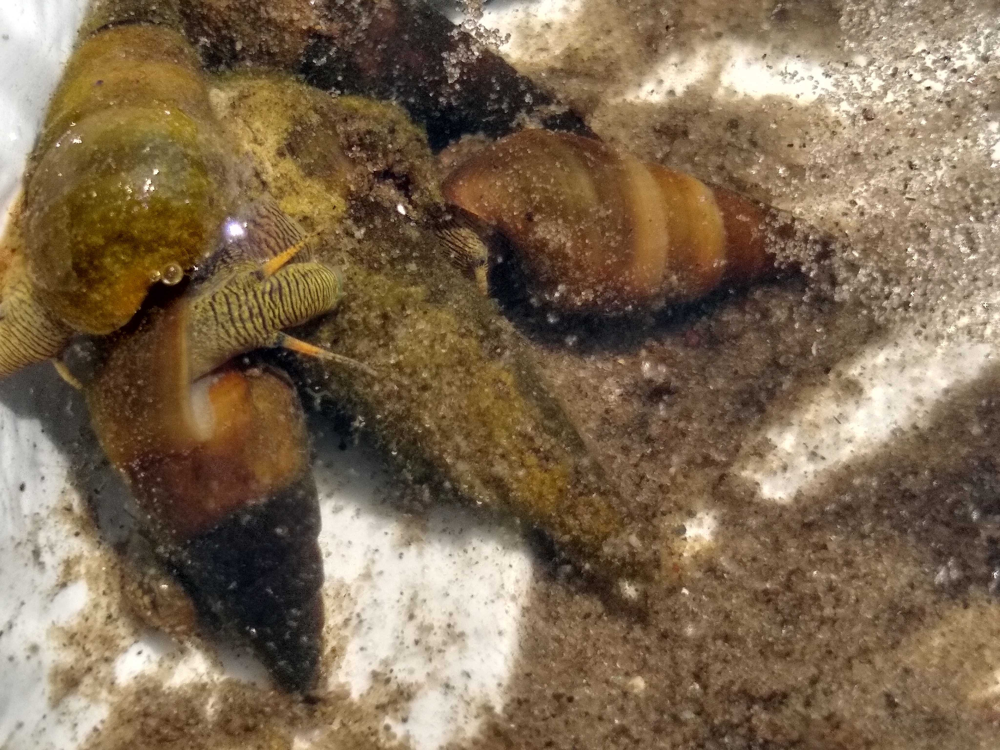
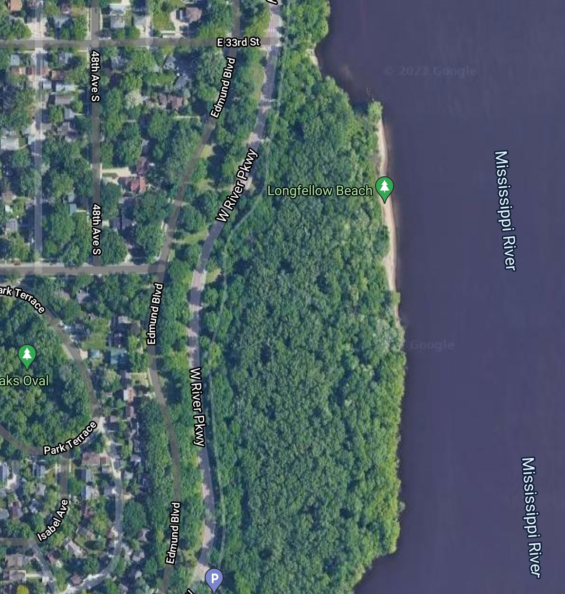

Welcome to Snails Dot M and more
Learning about Snails in the Mississippi River
Size
each snail is about the size of your pinky or less
the babies are tinier
Color
brown or light
Snail Patterns
mostly swirling
little tiny pointy shells with swirls inside
Body
The snails usually have little gray antennae.
Mussels are oval sized and have a little crack above their mouth
You also may see polyps attached to the mussels.
Please don't bother the mussels.
Trails
the snails leave sandy trails at the edge of the water or deeper
make sure the trails are not loop-dee trails because those are mussels and not snails
Location
you can find them in the Mississippi River, but we think that they can also be in other places
they are found at the sand beach along the Winchell Trail
if you are not next to our house or further, you might not know about this Location
Picture

Map
First go down a long pair of steps, then go down to whatever river you have and look near the shore
